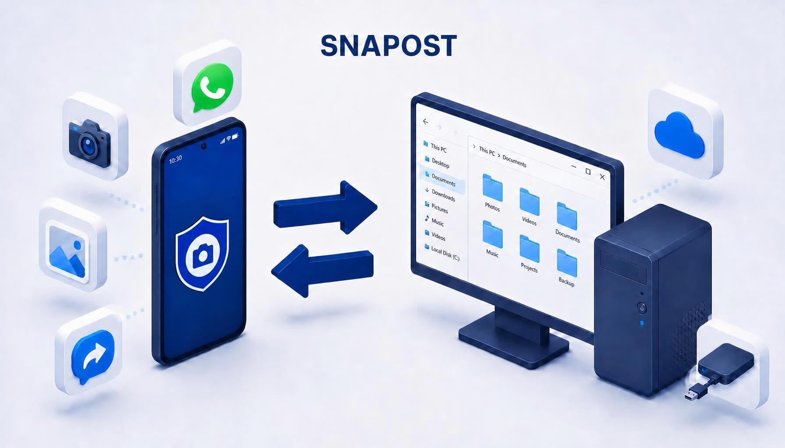
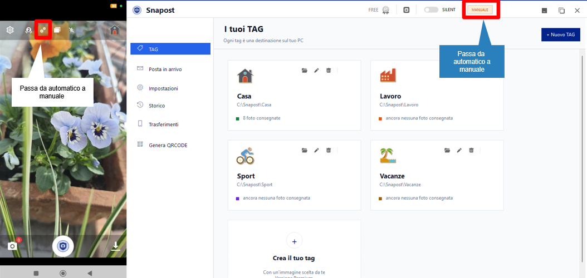

Scatta con un tag
Scegli il tag prima dello scatto: casa, lavoro, un progetto o qualsiasi categoria ti sia utile.
Scatta dal telefono, assegna un tag e ritrovi la foto sul PC già organizzata. Senza passaggi inutili, senza cercarla dopo.

Snapost affianca la fotocamera del telefono a un'app Windows che riceve e smista foto e documenti nei percorsi che hai scelto. E lo scambio non va in una sola direzione.
Scegli il tag prima dello scatto: casa, lavoro, un progetto o qualsiasi categoria ti sia utile.
Invio automatico o manuale: le foto in attesa sono visibili e puoi gestire la coda dall'app.
Ogni tag è collegato a una cartella del PC: le foto arrivano già al posto giusto, pronte per il tuo flusso.
Trasferisci anche PDF, documenti Word ed Excel e file di testo: dal telefono al PC, pronti da aprire con il programma che li gestisce.
Seleziona una o più foto sul PC e inviale al telefono: arrivano direttamente nella galleria, senza cavi.
Per ogni foto decidi se creare una copia nella galleria del telefono, anche a posteriori e senza duplicati.
Abbina lo stesso telefono a più computer e scegli di volta in volta con quale scambiare le foto.
Aggiungi un commento a qualsiasi foto, dal telefono o dal PC: la nota viaggia con l'immagine e la ritrovi nel dettaglio.
Due interruttori, un solo principio: sei tu a scegliere se le foto volano da sole o aspettano il tuo OK.

Automatico: la foto scattata parte subito verso il PC, senza toccare niente.
Manuale: la foto resta nella galleria dell'app finché non la invii tu — la controlli, la ritagli o la scarti prima di farla partire.
Automatico: le foto ricevute vengono consegnate immediatamente nelle cartelle dei tag.
Manuale: le foto aspettano nella Posta in arrivo e le consegni quando vuoi, magari dopo un ultimo controllo.
Il collegamento iniziale avviene tra le due app sulla rete locale.
Snapost sul telefono e Snapost per Windows sul PC che riceverà le foto.
Apri il QR mostrato dall'app Windows e scansionalo con il telefono.
Associa i tag alle cartelle sul PC: da lì in poi, le foto seguono il percorso scelto.
SnapostPRO è la versione pensata per il tuo studio: il repository di rete organizzato su tre livelli — Progetto, Settore e Sezione — e un esplora file dedicato ai tuoi progetti, con funzioni speciali per gestire foto e documenti. Un vero documentale: sfogli l'albero delle commesse, apri un file e ritrovi tutto esattamente dove lo aspetti.
Esempio illustrativo: nomi dei cantieri e struttura delle cartelle sono completamente personalizzabili.
Per usare il flusso completo, installa l'app Android e la sua compagna per Windows.
Riceve le foto dal telefono, le organizza nelle cartelle dei tag e permette di gestire i trasferimenti in entrambe le direzioni.
Scarica l'app desktop · v0.9.1 Vedi la scheda dell'app →Se Windows mostra l'avviso SmartScreen: Informazioni → Esegui comunque.Scatta, assegna tag, gestisci le foto e inviale al PC quando vuoi.
Apri Google Play Vedi la scheda dell'app →Il collegamento allo store verrà inserito quando l'app sarà pubblicata.Sì. L'app Android scatta e invia; l'app Windows riceve le foto e le smista nelle cartelle associate ai tag.
Il collegamento e il trasferimento standard avvengono sulla rete locale. Il PC deve essere acceso e l'app desktop avviata per ricevere le foto.
Sì. I tag servono a rappresentare le categorie e le destinazioni che ti sono utili. Per le aziende, eventuali regole personalizzate si valutano sul flusso richiesto.
La compatibilità dipende dalla configurazione della rete e dalle policy IT. Per un uso aziendale conviene verificare prima il contesto e i requisiti.
Domande, dubbi, idee su Snapost: raccontacelo qui. Se preferisci, puoi anche scrivere direttamente a info@snapost.it.
Nessuna iscrizione, nessuna newsletter: ricevi solo la nostra risposta.